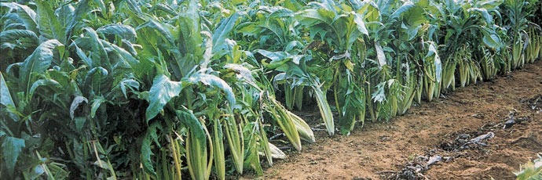
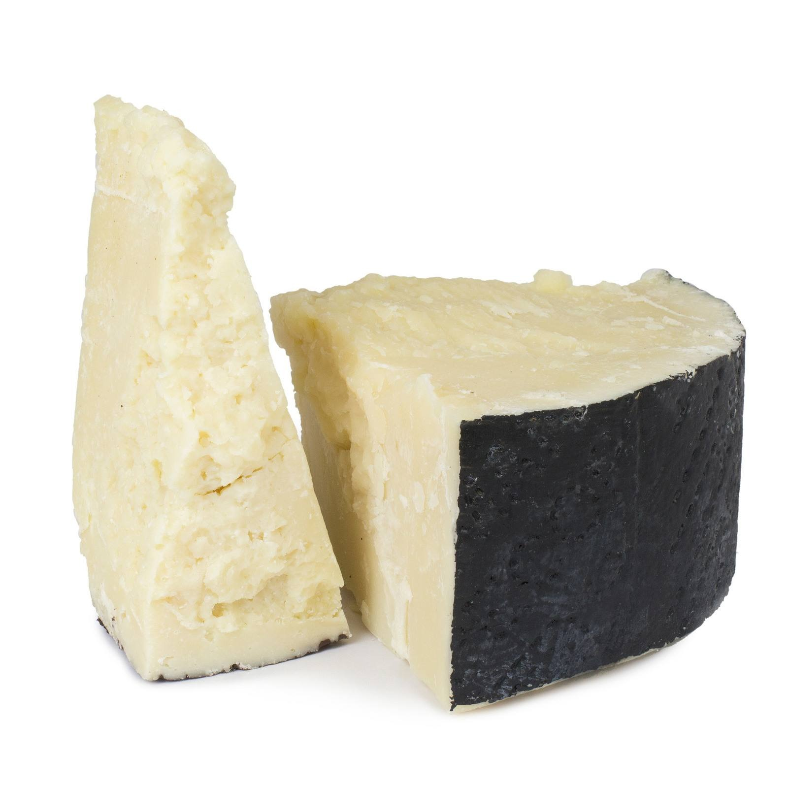
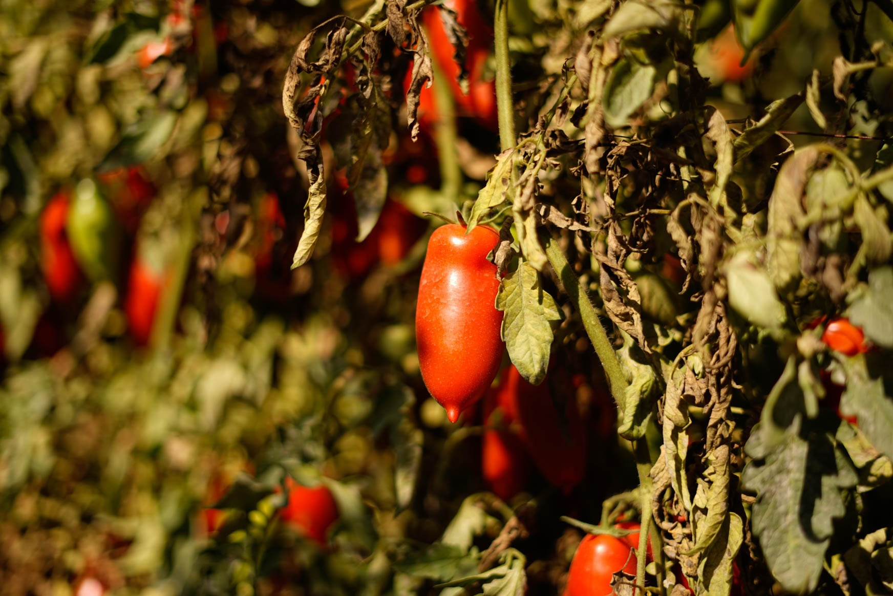

Ingredienti
L’indice degli ingredienti raccoglie le ricette a partire dalle materie prime e dagli elementi caratterizzanti della preparazione.
Filtri
Categoria
Regime
Stagione
Aceto
In generale preferisco l'aceto che faccio in casa. Nell'apposito contenitore in vetro aggiungo periodicamente alla "madre" il vino rosso che avanza... e lascio riposare e trasformarsi per alcuni mesi. Poi di tanto in tanto estraggo l'aceto per riempire dei piccoli contenitori in vetro in cui conservo l'aceto.
Forse non è eccelso, ma sono certo che sia fatto con vino discreto.
Questo no ha nulla a che fare con l'Aceto Balsamico tradizionale di Modena, i cui usi sono molto specifici.

Aceto Balsamico Tradizionale di Modena DOP
Lo utilizzo raramente perché ritengo che solo pochi piatti meritano di essere accompagnati a questo nettare.
Ma ho la fortuna di essere amico di Roberto L. che lo produce per uso proprio...
Peraltro oltre al DOP per il "Tradizionale" vi è un IGP per un prodotto profumato ma molto diverso. Molto più economico, molto più "aceto".
Per il ricettario contemplo solo il DOP, ragione per cui indico solo questo prodotto. Senza certificazione si parla di altro. Non contemplo.
Eccellenze.
da Ministero dell'agricoltura, della sovranità alimentare e delle foreste - Elenco e disciplinari DOP e IGP prodotti agricoli
"...L'«Aceto Balsamico di Modena» è un aceto prodotto nel rispetto delle seguenti disposizioni avente le caratteristiche elencate di seguito:
limpidezza: limpido e brillante;
colore: bruno intenso;
odore: caratteristico, persistente, intenso e delicato, gradevolmente acetico, con eventuali note legnose;
sapore: agrodolce, equilibrato, gradevole, caratteristico;
densità a 20°C: non inferiore a 1,06 per il prodotto affinato e non inferiore a 1,15 per il prodotto «invecchiato» e a 1,25 per il prodotto «riserva»;
titolo alcolometrico effettivo: non superiore a 1,5% in volume;
estratto secco netto minimo: 30 gr per litro;
acidità totale minima: 6 per cento per il prodotto affinato e 5,5 per cento per i prodotti «invecchiato» e «riserva»;
anidride solforosa totale: massimo 100 mg/l;
ceneri: minimo 2,5 per mille;
zuccheri riduttori: minimo 110 g/l..."
Aceto balsamico tradizionale di Modena DOP
"...Art. 6. Caratteristiche al consumo
L'Aceto balsamico tradizionale di Modena, all'atto dell'immissione al consumo deve rispondere alle seguenti caratteristiche:
colore: bruno scuro, carico e lucente;
densità : apprezzabile in una corretta, scorrevole sciropposità;
profumo: bouquet caratteristico, fragrante, complesso ma bene amalgamato, penetrante e persistente, di evidente ma gradevole ed armonica acidità;
sapore: caratteristico del balsamico, così come attraverso i secoli è stato consacrato dalla tradizione in immutabile continuità , dolce e agro e ben equilibrato con apprezzabile acidità con lieve tangente di aromaticità ottenuta per influenza dei vari legni usati dei vaselli di acetaia, vivo, franco, pieno, vellutato, intenso e persistente, in buona sintonia con i caratteri olfattivi che gli sono propri;
acidità totale: non inferiore a 4,5 gradi (espressa in grammi di acido acetico per 100 grammi di prodotto);
densità a 20 gradi centigradi: non inferiore a 1,240.
L'accertamento delle caratteristiche analitiche ed organolettiche della denominazione è effettuato, su richiesta degli interessati, su tutte le partite prima dell'immissione al consumo..."


Aceto di vino bianco


Aglio
Vi sono diverse varietà di aglio. Io in generale, forse per la mia storia, preferisco l'aglio "di montagna", a spicchi più piccoli e un profumo meno invasivo.
Eccellenze.
Aglio storico di Caraglio, Piemonte
"... Presidio Slow Food della Valle Grana, in Piemonte, più precisamente in una zona pedemontana della provincia di Cuneo da sempre votata a questa coltivazione. I bulbi sono piccoli e affusolati, di colore bianco con striature color vinaccia: prima di poter essere consumati vengono fatti essiccare per almeno 40 giorni e sono delicati nel profumo e nel sapore, oltre a essere facilmente digeribili. Spazio all’uso in pilastri della cucina regionale quali bagna cauda e salsa verde...."
Ma anche :
Aglio di Resia e Aglio rosso di Nubia
da Ministero dell'agricoltura, della sovranità alimentare e delle foreste - Elenco e disciplinari DOP e IGP prodotti agricoli
- Bagna caudaItalia - Piemonte · Secondi · Jacqueline Gibert
- Braciole di carne di cavalloItalia - Puglia · Primi · Nicola F.
- Calamari ripieniItalia - Puglia · Secondi · Nicola F.
- DaubeFrancia - Provenza · Secondi · Jacqueline Gibert
- Fusilli carciofi e salmoneItalia · Primi
- Gigot rotiFrancia · Secondi · Jacqueline Gibert
- Medaglioni di manzo con porciniItalia - Toscana · Secondi · Montefioralle
- Orecchiette baresi alle cime di rapaItalia - Puglia - Bari · Primi · Nicola F.
- Pappa con il pomodoroItalia - Toscana · Primi · Web
- Pasta al ragù di triglie e al succo d'aranciaItalia - Sicilia · Primi · Web
- Pasta con i broccoliItalia - Lazio - Roma · Primi · Eddy Salzano
- Pasta con le melanzaneItalia - Veneto · Primi
- Pasta con pesto alla sicilianaItalia - Sicilia · Primi
- Patatine*Francia · Contorni
- Paté di fegatoFrancia · Antipasti · Jacqueline Gibert
- Penne alla "Cannata"Italia - Sicilia - Salina · Primi · Ristorante "Alla cannata"
- Penne con mazzancolle alle verdureItalia - Veneto · Primi · Sandro B.
- Penne con zucchineItalia · Primi
- Purée di sedanoFrancia · Contorni
- Ratatouille (variante)Francia - Provenza · Contorni · Guillaume E.
- Riso cozze e patateItalia - Puglia - Bari · Primi · Nicola F.
- Salsa verdeItalia - Piemonte · Salse · Jacqueline Gibert
- Soupe au pistouFrancia - Provenza · Primi · Guillaume E.
- Spaghetti alla bottargaItalia - Sicilia · Primi · Franco C.
- Spaghetti alla puttanescaItalia - Campania - Napoli · Primi · Eddy Salzano
- Tajin MqualliMarocco · Secondi
- Vitello tonnatoItalia - Piemonte · Antipasti · Jacqueline Gibert


Albume

Alici

Alici sotto sale
Premessa: alici e acciughe sono la stessa cosa. Vi è una preferenza di utilizzo, alici se fresche e acciughe se conservate, ma non significativa.
In tutte le ricette che chiedono le alici conservate, ho difeso la scelta delle alici sotto sale e la provenienza Mediterranea.
Le ottime alici del mar Cantabrico le trovo troppo grasse.
La conservazione sott'olio (passaggio successivo a quella sotto sale) è sicuramente un modo per assaporarle senza doverle prima dissalare, ma purtroppo restano sempre più salate perché l'olio ha sigillato il sale all'interno della polpa. Invece se semplicemente salate, basta lavarle in acqua per ridurre di molto il sale. Ma per assaporarle con pane e burro... evviva quelle sott'olio.
Sicuramente quelle del mar Ligure sono più pregiate, mari più profondi, clima particolare. Ma in generale tutte quelle mediterranee le trovo superiori, almeno in cucina, a quelle cantabriche. Personalmente apprezzo molto quelle del Canale di Sicilia.
Quelle liguri hanno avuto il riconoscimento IGP.
Eccellenze.
da Ministero dell'agricoltura, della sovranità alimentare e delle foreste - Elenco e disciplinari DOP e IGP prodotti agricoli
Acciughe sotto sale del Mar Ligure IGP
"ART. 2 - Descrizione del prodotto
L’Indicazione Geografica Protetta (I.G.P.) "Acciughe sotto sale del Mar Ligure”, viene riservata al prodotto ottenuto dalla lavorazione e successiva conservazione sotto sale delle acciughe. Le acciughe, riferite esclusivamente ad individui della specie Engraulis encrasicolus L., sono pesci migratori e gregari che transitano, dalla primavera all’autunno, in prossimità della costa ligure e in inverno si stanziano tra i 100 e 150 metri di profondità.
La taglia massima è di 20 centimetri di lunghezza.
Il prodotto definito maturo, cioè pronto per essere commercializzato dovrà presentare le seguenti caratteristiche:
Aspetto esterno: le acciughe devono risultare intere; la pelle, molto fine, deve risultare in parte ancora visibile;
Consistenza: i filetti devono risultare morbidi e compatti ed aderenti alla lisca;
Colore: differente a seconda della porzione del corpo varia dal rosa al bruno intenso;
Sapore: asciutto, vivacemente sapido.
Le carni risultano magre, poco untuose al palato."
- Anatra in salsaItalia - Veneto · Secondi
- Bagna caudaItalia - Piemonte · Secondi · Jacqueline Gibert
- Bigoli in salsaItalia - Veneto · Primi
- Orecchiette baresi alle cime di rapaItalia - Puglia - Bari · Primi · Nicola F.
- Pasta con le sardeItalia - Sicilia - Palermo · Primi
- Penne alla "Cannata"Italia - Sicilia - Salina · Primi · Ristorante "Alla cannata"
- Peperoni, alici e capperiItalia - Puglia - Bari · Antipasti · Nicola F.
- Salsa verdeItalia - Piemonte · Salse · Jacqueline Gibert
- Sarde a beccaficoItalia - Sicilia · Antipasti · Ricettario "La cucina Siciliana"
- Sfogliata puglieseItalia - Puglia · Primi · Nicola F.


Anatra

Arancia
Aringhe sciocche affumicate

Arista di maiale

Barbera

Basilico
- Gnocchetti sardi alla UrbawebItalia - Veneto - Venezia · Primi · Eddy Salzano
- Pappa con il pomodoroItalia - Toscana · Primi · Web
- Pasta con pesto alla sicilianaItalia - Sicilia · Primi
- Ratatouille (variante)Francia - Provenza · Contorni · Guillaume E.
- Soupe au pistouFrancia - Provenza · Primi · Guillaume E.

Battuta di manzo

Bigoli
Birra ambrata
Bottarga di muggine
Non esiste un DOP o un IGP per la Bottarga di muggine.
Ma Slow Food l'ha inserita fra i prodotti da salvare.
Si trova raramente in commercio.
Sardegna
Bottarga di muggine e pesca tradizionale dello stagno di Cabras
Comunicato – Immagini – Scheda
A Cabras, nello Stagno che si apre a nord del Golfo di Oristano, la bottarga di muggine viene prodotta seguendo tecniche tradizionali che risalgono ai Fenici. I muggini vengono catturati nei lavorieri, impianti naturali che intrappolano il pesce, e le uova delle femmine vengono prelevate, salate e poi essiccate all’aria per conservarle. Oltre alla bottarga, il muggine viene valorizzato anche come merca, lessato e avvolto in foglie di sa zibba, e come su pisci affumau, filetti affumicati dopo salatura e asciugatura. La pesca e la trasformazione seguono metodi artigianali, rispettosi dell’ecosistema dello stagno e della stagionalità del pesce, garantendo un prodotto dal colore ambrato e dal sapore dolce, nettamente diverso da quello dei muggini importati dall’estero. Il progetto è sostenuto dal Gal Sinis e FLAG “Pescando”.
Broccoli
Brodo

Brodo di carne
Brodo vegetale

Bucatini
Burro
- Agnolotti al sugo d'arrostoItalia - Piemonte · Primi · Jacqueline Gibert
- Anatra all'aranciaFrancia · Secondi · Aimée Beiersdorf
- Anatra in salsaItalia - Veneto · Secondi
- CrêpesFrancia · Dolci · Jacqueline Gibert
- Fegato alla venezianaItalia - Veneto - Venezia · Secondi
- Gnocchi con le trombette dei mortiItalia - Veneto · Primi · Web
- Gulash (variante)Italia - Alto-Adige - Val-di-Casies · Secondi · Regihof
- Minestra di porriFrancia · Primi · Jacqueline Gibert
- Patatine*Francia · Contorni
- Purée di sedanoFrancia · Contorni
- Roux brunFrancia · Fondi


Burro di Normandia AOP

Calamari
Cannella
Canoccia

Capperi di Pantelleria IGP
- Paccheri di Gragnano IGP con orata, pomodorini, capperi e zenzeroItalia - Sardegna · Primi · Mix Risto bottega sarda
- Pasta con pesto alla sicilianaItalia - Sicilia · Primi
- Penne alla "Cannata"Italia - Sicilia - Salina · Primi · Ristorante "Alla cannata"
- Peperoni, alici e capperiItalia - Puglia - Bari · Antipasti · Nicola F.
- Salsa verdeItalia - Piemonte · Salse · Jacqueline Gibert
- Sfogliata puglieseItalia - Puglia · Primi · Nicola F.
- Spaghetti alla puttanescaItalia - Campania - Napoli · Primi · Eddy Salzano
- Vitello tonnatoItalia - Piemonte · Antipasti · Jacqueline Gibert

Carciofi
Cardo bianco gobbo
Solo da alcuni anni sembra sempre meno presente ai mercati, eppure era stato recentemente scoperto anche fuori dal Piemonte.
Eccellenze:
Presidio Slow Food:
Cardo gobbo di Nizza Monferrato

"...A settembre, quando sono già alti e rigogliosi, sono piegati e ricoperti di terra. È qui che, tentando di liberarsi per ritrovare la luce, si gonfiano e si incurvano trasformandosi in cardi gobbi; è qui che le coste perdono ogni traccia di clorofilla, diventando bianchissime e tenere. Dopo un mese l’imbianchimento è compiuto: si dissotterrano i cardi, si eliminano le foglie esterne e le coste rovinate con la purinetta (una roncola lunga e sottile) e si tiene il cuore. Basta risciacquarli con un po’ d’acqua e sono pronti: straordinariamente croccanti e dolci. Tutti i cardi si mangiano cotti, soltanto il cardo gobbo di Nizza Monferrato è buono crudo, ingrediente fondamentale di uno dei piatti simbolo della gastronomia piemontese; la bagna cauda, salsa bollente a base di aglio, olio extravergine e acciughe...."
Carne di bue grasso di Carrù

Carota
- Agnolotti al sugo d'arrostoItalia - Piemonte · Primi · Jacqueline Gibert
- Anatra all'aranciaFrancia · Secondi · Aimée Beiersdorf
- DaubeFrancia - Provenza · Secondi · Jacqueline Gibert
- Gulash (variante)Italia - Alto-Adige - Val-di-Casies · Secondi · Regihof
- Pappa con il pomodoroItalia - Toscana · Primi · Web
- Pasta e fagioliItalia - Veneto · Primi · Web
- Risi e bisiItalia - Veneto - Venezia · Primi · Web
- Soupe au pistouFrancia - Provenza · Primi · Guillaume E.
- Vitello tonnatoItalia - Piemonte · Antipasti · Jacqueline Gibert
- Zuppa di legumi con funghi settembrini secchiItalia · Primi


Carote
Carpaccio di manzo
Cavolfiore
Cavolo

Cavolo rosso

Cime di rapa
Cipolla
- Agnolotti al sugo d'arrostoItalia - Piemonte · Primi · Jacqueline Gibert
- Anatra all'aranciaFrancia · Secondi · Aimée Beiersdorf
- Aringhe in terrinaFrancia - Alsazia · Antipasti · Jacqueline Gibert
- Arista alla birraItalia - Campania · Secondi · Nicola D.
- Bigoli in salsaItalia - Veneto · Primi
- DaubeFrancia - Provenza · Secondi · Jacqueline Gibert
- Fegato alla venezianaItalia - Veneto - Venezia · Secondi
- Gulash (variante)Italia - Alto-Adige - Val-di-Casies · Secondi · Regihof
- Pasta con le sardeItalia - Sicilia - Palermo · Primi
- Pasta e fagioliItalia - Veneto · Primi · Web
- Paté di fegatoFrancia · Antipasti · Jacqueline Gibert
- Purée di sedanoFrancia · Contorni
- Risi e bisiItalia - Veneto - Venezia · Primi · Web
- Soupe au pistouFrancia - Provenza · Primi · Guillaume E.
- Vitello tonnatoItalia - Piemonte · Antipasti · Jacqueline Gibert
Cipolla bianca
Cipolla viola
Cipollotti
Concentrato di pomodoro
Conchiglie
Coniglio
Coriandolo
Corteccia
Cosciotto d'agnello
Cotechino di suino
Cotenna di maiale
Cous cous

Cozze
Cubetti di pane abbrustoliti
Cumino
Cuore di sedano
Curaçao
Curcuma
Fagioli bianchi e rossi
Fagioli di Lamon
Fagiolini verdi
Farina
Farina di frumento 00
Fegatini di pollo
Fegato
Fegato di anatra
Fegato di vitello
Fesa di tacchino

Filetti di orata
Filettino di maiale

Filetto angus

Finocchi
Finocchietto
Funghi porcini
Funghi settembrini
Funghi trombette dei morti essiccati e grattugiati
Fusilli
Gallina
Girello di vitello intero
Gnocchetti di patate
Gnocchetti sardi
Insalata novella
Lardo
- Agnolotti al sugo d'arrostoItalia - Piemonte · Primi · Jacqueline Gibert
- Anatra all'aranciaFrancia · Secondi · Aimée Beiersdorf
- DaubeFrancia - Provenza · Secondi · Jacqueline Gibert
- Medaglioni di manzo con porciniItalia - Toscana · Secondi · Montefioralle
- Paté di fegatoFrancia · Antipasti · Jacqueline Gibert
Latte
Latte intero
Legumi misti secchi
Lievito per dolci
Limone
- Anatra in salsaItalia - Veneto · Secondi
- Antipasto di canocceItalia - Veneto · Antipasti
- CrêpesFrancia · Dolci · Jacqueline Gibert
- MadeleineFrancia - Normandia · Dolci
- Straccetti di pollo al limoneItalia · Secondi
- Tajin MqualliMarocco · Secondi
- Tortino di aliciItalia - Lazio - Roma · Antipasti · Eddy Salzano

Limoni
Lingua di manzo
Maiale
Maionese
Mandorle
Mandorle sgusciate
Mandorle tostate e grattugiate
Manzo
- Agnolotti al sugo d'arrostoItalia - Piemonte · Primi · Jacqueline Gibert
- DaubeFrancia - Provenza · Secondi · Jacqueline Gibert
- Gulash (variante)Italia - Alto-Adige - Val-di-Casies · Secondi · Regihof
- Medaglioni di manzo con porciniItalia - Toscana · Secondi · Montefioralle
- Roastbeef (arrosto all'inglese)Regno Unito · Secondi
Marsala
Mazzancolle
Melanzana
Melanzane lunghe
Melograno
Mezze penne rigate
Miele delicato
Mollica di pane imbevuto di latte
Nepetella
Noce moscata
Olio extra verdine d'oliva
Olive di Gaeta DOP
Olive nere
Olive nere snocciolate pugliesi
Olive verdi
Orecchiette baresi
Paccheri di Gragnano IGP
Dal disciplinate della Pasta di Gragnano IGP.

La “Pasta di Gragnano” è il prodotto ottenuto dall’impasto della semola di grano duro con acqua della falda acquifera locale.
I formati immessi al consumo sono, diversi, tutti tipici, frutto della fantasia dei pastai gragnanesi.
Il prodotto all'atto dell'immissione al consumo, deve possedere le seguenti caratteristiche:
2.1 Caratteristiche fisiche:
aspetto esterno: omogeneo senza macchie bianche o nere; assenza di bolle d'aria, di fessure o tagli, di muffe, larve o parassiti e di corpi estranei;
sezione di frattura: vitrea;
colore: giallo paglierino;
rugosità: presente quale caratteristica dell’uso delle trafile in bronzo.
Alla cottura la “Pasta di Gragnano” IGP si presenta di:
consistenza: soda ed elastica;
omogeneità della cottura: uniforme;
tenuta di cottura: buona e lunga;
collosità: assente o impercettibile.
2.2 Caratteristiche chimiche:
umidità: non superiore al 12,5% sul prodotto finito;
proteine minimo: 13% sulla sostanza secca;
ceneri max.: 0.86% sulla sostanza secca.
2.3 Caratteristiche organolettiche:
sapore: sapido con gusto deciso di grano duro;
odore: di grano maturo.
Pancetta
Pane toscano
Pangrattato
- Pasta con le sardeItalia - Sicilia - Palermo · Primi
- Penne alla "Cannata"Italia - Sicilia - Salina · Primi · Ristorante "Alla cannata"
- Sarde a beccaficoItalia - Sicilia · Antipasti · Ricettario "La cucina Siciliana"
- Spaghetti alla bottargaItalia - Sicilia · Primi · Franco C.
- Tortino di aliciItalia - Lazio - Roma · Antipasti · Eddy Salzano
Panna
Paprika
Parmigiano Reggiano
Parmigiano Reggiano DOP
Parmigiano Reggiano IGP
Passata di pomodoro
Pasta
Pasta per pane
Patate
- Battuta di manzo alla boscaiolaItalia - Veneto - Alpago · Secondi · Antonio S.
- Gulash (variante)Italia - Alto-Adige - Val-di-Casies · Secondi · Regihof
- Minestra di cavoliFrancia · Primi · Jacqueline Gibert
- Minestra di porriFrancia · Primi · Jacqueline Gibert
- Purée di sedanoFrancia · Contorni
- Riso cozze e patateItalia - Puglia - Bari · Primi · Nicola F.
- Soupe au pistouFrancia - Provenza · Primi · Guillaume E.
- Tajin MqualliMarocco · Secondi
Patatine
Pecorino romano
Pecorino romano DOP

“Il Pecorino Romano D.O.P. è un formaggio unico, naturale e nutriente, prodotto esclusivamente con latte di pecora delle zone geografiche protette.
Il suo gusto aromatico, intenso e piccante - che si declina a seconda del grado di stagionatura - si sposa a meraviglia con un'infinità di sapori...anche quelli che non immagini.
Un Formaggio dalle origini antiche, perfetto per tutte le sfumature della cucina contemporanea"
Penne
Pepe tritato
Peperoncini secchi piccanti
Peperoncino
Peperoni
Peperoni gialli e rossi
Peperoni sotto mosto
Peperoni sotto mosto (o sotto raspe, vinacce)
Mi ricordo che andando con i miei genitori a comprare vino ci proposero anche un barattolo di peperoni sotto raspe da assaggiare con la Bagna cauda...
Eccellenze.
"...Il sapore delicatamente dolce e lo spessore della bacca, consistente e carnoso, (caratteristica che si sta perdendo in quasi totalmente tra le attuali varietà presenti sul mercato) lo rendono particolarmente adatto alla conservazione: quella tradizionale è sotto vinaccia, per questo i peperoni di Capriglio sono sempre stati famosi e ricercati nei paesi vicini.
Si tratta di un metodo di conservazione molto semplice che consiste nel porre in una damigiana i peperoni interi, ben lavati e con il picciolo ancora attaccato, dove vengono immersi in una soluzione composta da aceto, acqua bollente e sale. La bocca della damigiana viene poi chiusa con vinacce derivate dalla torchiatura del vino freisa locale, che avviene nello stesso periodo della maturazione dei peperoni. Dopo un mese sono pronti per il consumo ma si possono conservare anche alcuni mesi..."
Da Wikipedia:
"...I peperoni sotto vinaccia si possono consumare come antipasto, affettati e in genere conditi con olio e sale. Sono anche utilizzati come accompagnamento della bagna càuda..."
Pesce spada affumicato
Petto di pollo
Picaña (Lombata)
Pinoli
Piselli
Pistilli di zafferano
Pollo
Polpa di cavallo a fettine
Pomodori
Pomodori pelati san Marzano DOP

Le caratteristiche che rendono unico e distinguibile il Pomodoro San Marzano da tutti gli altri sono ben specifiche.
I frutti hanno una tipica forma allungata e una misura solitamente compresa tra i sei e gli otto centimetri e il colore a maturazione è un rosso brillante.
La buccia sottile si stacca facilmente e custodisce una polpa elastica e corposa quasi priva di semi.
La sezione interna del pomodoro presenta due o tre logge e il sapore è tipicamente intenso ed agrodolce.
La densità della polpa, compatta e carnosa, fa sì che il San Marzano non si schiacci durante la lavorazione dando vita a pelati sodi e salse consistenti.
Dal disciplinare...
Pomodori san Marzano DOP
Pomodorini
- Gulash (variante)Italia - Alto-Adige - Val-di-Casies · Secondi · Regihof
- Paccheri di Gragnano IGP con orata, pomodorini, capperi e zenzeroItalia - Sardegna · Primi · Mix Risto bottega sarda
- Pasta al ragù di triglie e al succo d'aranciaItalia - Sicilia · Primi · Web
- Penne alla "Cannata"Italia - Sicilia - Salina · Primi · Ristorante "Alla cannata"
Pomodoro rosso
Porri
Porro
Prosciutto cotto
Prosciutto crudo
Rape
Ravanelli
Riso
Riso bollito nel latte
Rucola
Sale e pepe
Salmone cotto a vapore
Sarde
Scalogno
Schie
Scorza di limone grattugiata
Sedano
- Agnolotti al sugo d'arrostoItalia - Piemonte · Primi · Jacqueline Gibert
- Antipasto di canocceItalia - Veneto · Antipasti
- Arista alla birraItalia - Campania · Secondi · Nicola D.
- Bagna caudaItalia - Piemonte · Secondi · Jacqueline Gibert
- Gnocchetti sardi alla UrbawebItalia - Veneto - Venezia · Primi · Eddy Salzano
- Gulash (variante)Italia - Alto-Adige - Val-di-Casies · Secondi · Regihof
- Pappa con il pomodoroItalia - Toscana · Primi · Web
- Purée di sedanoFrancia · Contorni
- Risi e bisiItalia - Veneto - Venezia · Primi · Web
- Soupe au pistouFrancia - Provenza · Primi · Guillaume E.
- Zuppa di legumi con funghi settembrini secchiItalia · Primi
Sedano rapa
Senape
Senape di Digione
Soppressa veneta
Spaghetti
Spaghetti o vermicelli
Spinaci
Stoccafisso
Strutto
Subiotini
Testina di vitello
Tonno

Tonno in scatola
Topinambur
Triglie di scoglio
Uova
Uva passa
Uva sultanina
Vino bianco molto secco
Vino bianco secco
- Anatra all'aranciaFrancia · Secondi · Aimée Beiersdorf
- Aringhe in terrinaFrancia - Alsazia · Antipasti · Jacqueline Gibert
- Paccheri di Gragnano IGP con orata, pomodorini, capperi e zenzeroItalia - Sardegna · Primi · Mix Risto bottega sarda
- Tonno alla CarloFortinaItalia - Sardegna - Carloforte · Secondi · Serena S.
Vino rosso
Vitello
Zafferano
Zenzero
Zucchero di canna
Zucchero semolato
Zucchina
Zucchine
- Gnocchetti sardi alla UrbawebItalia - Veneto - Venezia · Primi · Eddy Salzano
- Penne con mazzancolle alle verdureItalia - Veneto · Primi · Sandro B.
- Penne con zucchineItalia · Primi
- Ratatouille (variante)Francia - Provenza · Contorni · Guillaume E.
- Zucchine in scapeceItalia - Campania - Napoli · Antipasti